My favorite artist of all time, probably!!! I was a really big fan of her works before I even found out about Baroque, (my favorite game!) so when I discovered that she worked on some Baroque doujins I was really astonished.
Unfortunately, I don't think I will scan the insides of these doujins properly because they're very hard to find and expensive, but I did scan the covers and will upload some edited photos of the pages.

Probably has my favorite back and cover of all the Shibamoto doujins I have. I might be wrong because I can't read Japanese, but there is a "DAUGTHER SIDE" and a "BAROQUE SIDE," so I think you could read the doujin L-R to read the "DAUGTHER"story and R-L for the "BAROQUE" story.
An 18-page short, poem-style doujin written by Nielsen Horiuchi (who I believe is Shibamoto's sister..?). This one is a bit unique because the illustrations are printed in blue and red ink with some overlaying effects, save for the last page which is just black ink. Features Tendou-Tenshi and Jokyou-Tenshi. It's exquisitely beautiful...!!! The front and back have a metallic-gold color to it so it was kind of difficult to scan, I tried to correct it as best as I could but I swear metallics are just so hard to capture T_T.
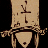
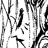
Written by Nielsen. 34 pages! It's the longest Baroque doujin out of the ones I have. I know she has a few other releases I don't have, like UNDER BAROQUE, KUNSTLICH VAGINA, EUREKA, and a lot more I've never seen before. If you find these by any chance... You should totally let me know...?!
 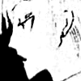
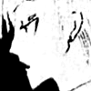
25 page comic and 4-koma gag stuff by Shibamoto. Nielsen isn't present on this release. What I could get out of it with Google Translate was pretty entertaining, I was surprised that Shibamoto would write a comedy release.
Shibamoto's last Baroque doujin. According to her Twitter, there was supposed to be another release, but she was too busy at the time. There's 26 pages, but most of them are guest artist's work. It has my favorite Tendou-Tenshi drawing by her in it though, so I guess that's one positive about it.
 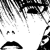
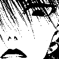
I think these are Shibamoto's personal characters. Seems Final Fantasy inspired. Features artwork of the main cast of the story from 1996-2000. Pretty cute. The third picture was actually from a Comiket flyer that was in my copy of Contourné Collage.
Another doujin with original characters. SOLOMON looks a lot like Abel from Trinity Blood, but with black hair...
 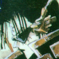
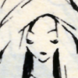
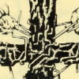
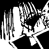
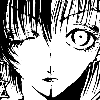
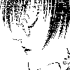
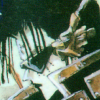
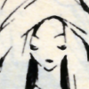
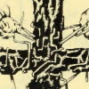
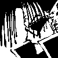
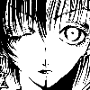
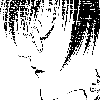
I didn't scan the cover or the backside because it just scans out white. But it's got this cool puffy gel sort of thing with CROSSWORLDS on it. Really Kusumoto Maki-esque with the presentation and style. Also, there's another character featured that resembles Abel from Trinity Blood...
I believe this doujin is related to the characters in Angel Disease, as the character with glasses and a ponytail reappears. Originally published in 1999, reprinted 2001.
{kind=link}